Konsultasi Pembangunan Pabrik
Layout alur proses, studi kelayakan lahan, kalkulasi kapasitas, serta pendampingan regulasi dan tata letak higienis hingga pabrik beroperasi.
Pelajari Alur KonsultasiKonsultasi pembangunan pabrik, perlengkapan produksi, serta mesin cetak galon dan botol untuk kebutuhan bisnis Anda.
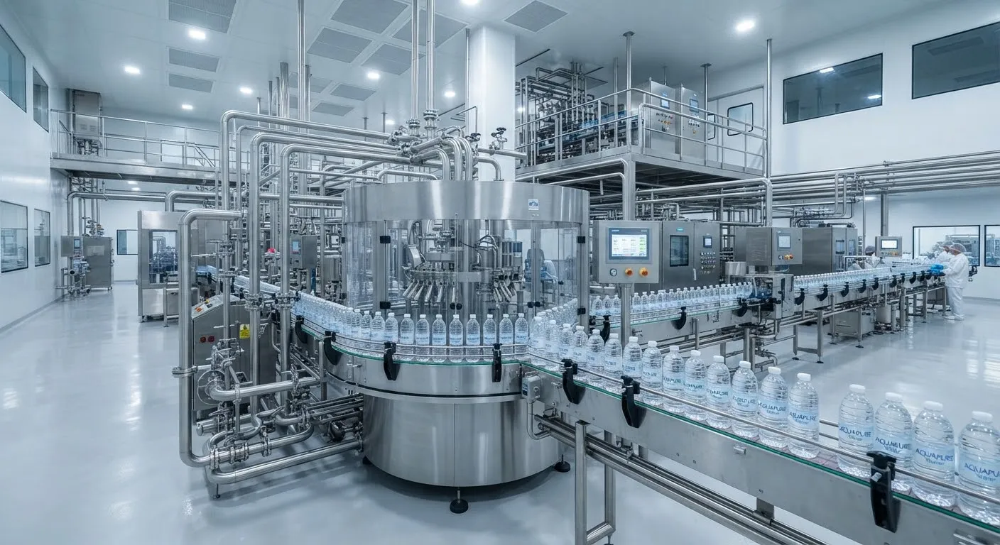
Integrasi Sistem Pemurnian & Cetak Kemasan Berkecepatan Tinggi
Layout alur proses, studi kelayakan lahan, kalkulasi kapasitas, serta pendampingan regulasi dan tata letak higienis hingga pabrik beroperasi.
Pelajari Alur KonsultasiUnit water treatment (UF/RO), perpipaan sanitary food-grade, tangki stainless steel bertekanan, hingga sistem pengisian dan penutupan higienis.
Katalog Komponen LiniMesin blow moulding presisi tinggi untuk botol PET 330 ml–1.500 ml serta mesin cetak galon polikarbonat / PET kapasitas 5 L dan 19 L.
Spesifikasi Mesin Cetak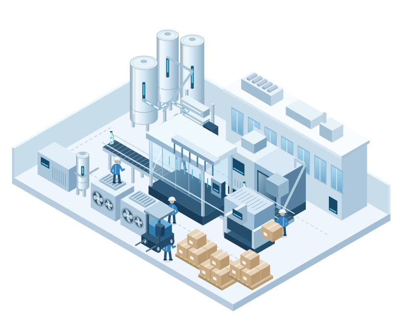
Tirta Wiyata Investama hadir sebagai mitra strategis bagi pemilik lahan, investor perintis, maupun korporasi yang ingin mendirikan fasilitas produksi air minum dalam kemasan. Kami memfasilitasi setiap tahap dari rekayasa kelayakan (feasibility), penyusunan tata letak ruang higienis, penyediaan permesinan, hingga pendampingan uji alir komersial.
Dengan pengalaman instalasi di berbagai wilayah Indonesia, pendekatan kami bertumpu pada keandalan mekanikal jangka panjang, efisiensi konsumsi daya, serta kemudahan transfer teknologi kepada tim operasional Anda.
Lihat SertifikasiMenjadi penggerak utama pertumbuhan industri manufaktur air minum nasional yang mandiri, efisien, dan berstandar higienitas tertinggi.
Memberikan solusi rancang bangun pabrik yang komprehensif, menyediakan mesin cetak berdaya tahan tinggi, dan memastikan transfer teknologi yang tuntas kepada operator lokal.
Program pendampingan terstruktur khusus untuk pemilik lahan dan calon investor pabrik air minum yang membutuhkan panduan menyeluruh dari nol hingga pabrik beroperasi penuh.
Ingin Memulai Rencana Pembangunan Pabrik?
Hubungi admin untuk penawaran dan jadwal konsultasi awal.
Komponen mekanikal, pengolahan air, dan pendukung higienis berspesifikasi industri food-grade untuk keandalan lini produksi air minum harian Anda.
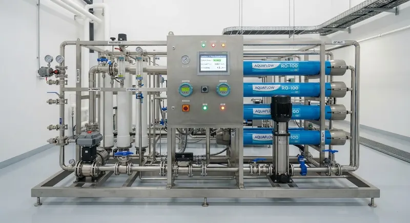
Multi-media filtration, Ultrafiltrasi (UF), Reverse Osmosis (RO) berskala industri, serta generator ozonisasi higienis.
Tanya Ketersediaan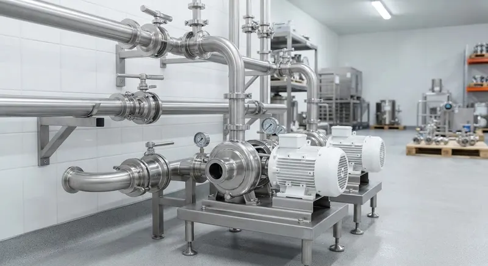
Sanitary centrifugal pumps, perpipaan stainless steel food-grade SS304 & SS316, butterfly valves, dan koneksi tri-clamp.
Tanya Ketersediaan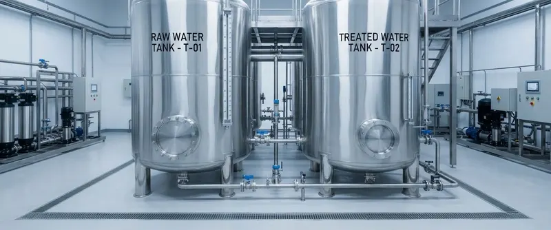
Tangki penampungan raw water & treated water stainless steel terisolasi dengan sanitary manhole, CIP ball, dan indikator level otomatis.
Tanya Ketersediaan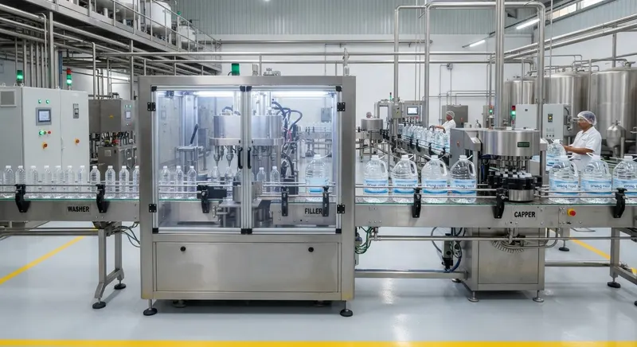
Automatic washing, filling, and capping system untuk galon 19 L dan botol PET dengan proteksi ruang ozon anti-kontaminasi.
Tanya Ketersediaan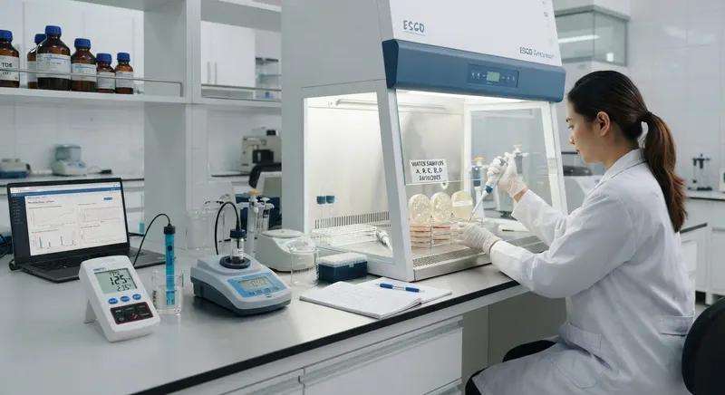
TDS meter presisi, turbidimeter terkalibrasi, inkubator mikroba, pH meter industri, serta instrumen uji rutin higienitas laboratorium pabrik.
Tanya Ketersediaan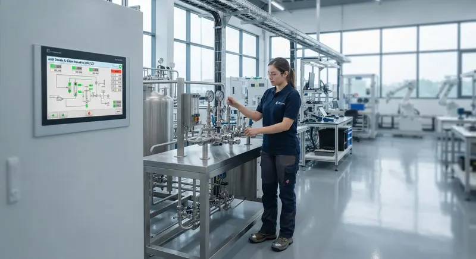
Mesin yang Anda cari belum tercantum? Hubungi kami untuk mendiskusikan jenis mesin, kapasitas, dan kebutuhan pabrik Anda.
Hubungi KamiUnit mesin pembuat wadah (blow moulding machine) berakurasi tinggi. Catatan teknis: seri ini berfokus pada pencetakan botol/galon dari preform, terpisah dari sistem pengisian (filling & capping).
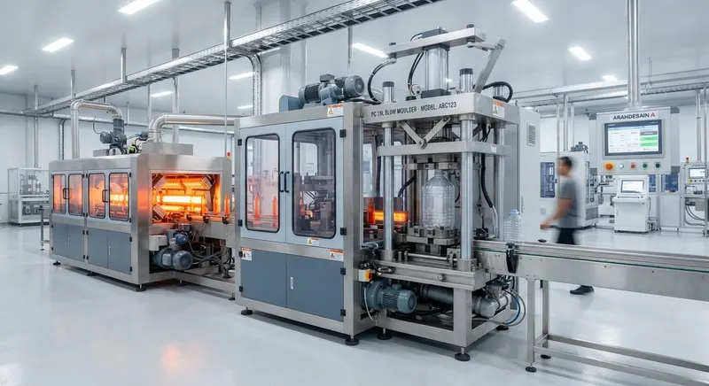
GalonMesin blow moulding semi-otomatis bertekanan tinggi untuk galon polikarbonat (PC) dan PET volume standar 19 liter.
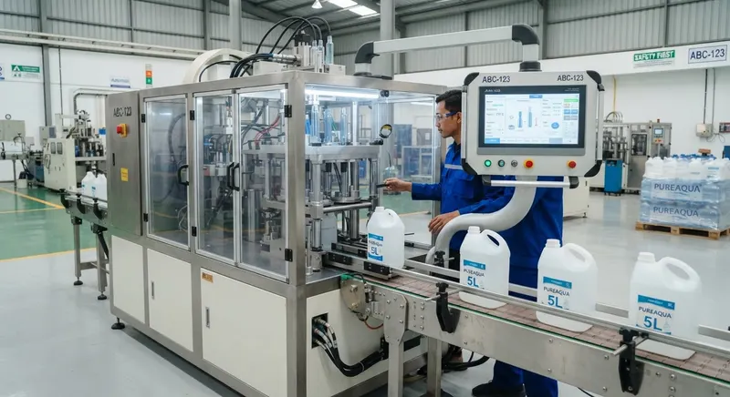
GalonUnit cetak galon mini 5 liter, cocok untuk kemasan air minum sekali pakai dan produk air keluarga berukuran kompak.
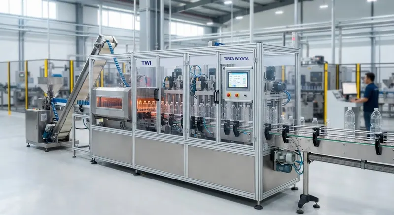
BotolPencetakan linear otomatis untuk botol PET personal 330 ml dan 600 ml dengan sistem penghemat konsumsi udara bertekanan.
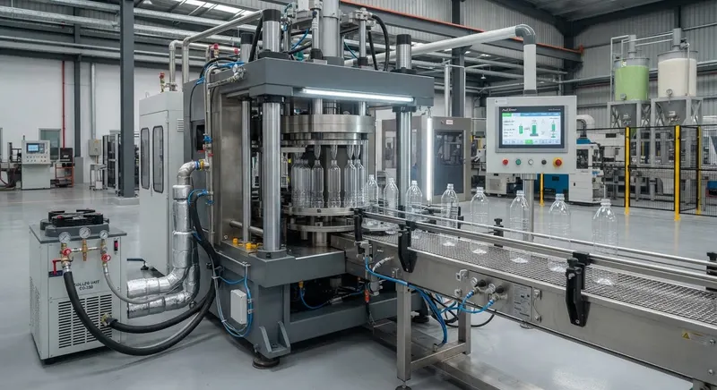
BotolMesin tiup botol PET format besar 1.500 ml dengan pemanasan inframerah merata guna kestabilan ketebalan dinding botol.
Kami menyediakan layanan rancang cetakan (mold die) kustom untuk botol maupun galon dengan siluet identitas unik merek Anda. Dari botol berprofil ergonomis, galon bertekstur struktural, hingga ukuran volume di luar spesifikasi standar.
Jelaskan target bentuk botol/galon, gramatur preform, serta estimasi volume harian.
Tim teknis kami menghitung toleransi mekanikal cetakan, waktu siklus tiup, dan efisiensi material.
Estimasi biaya fabrikasi mold baja/aluminium duralium dan estimasi jadwal pengiriman.
Desain referensi dan sketsa teknis dikirimkan langsung melalui WhatsApp setelah diskusi dimulai, tanpa form upload.
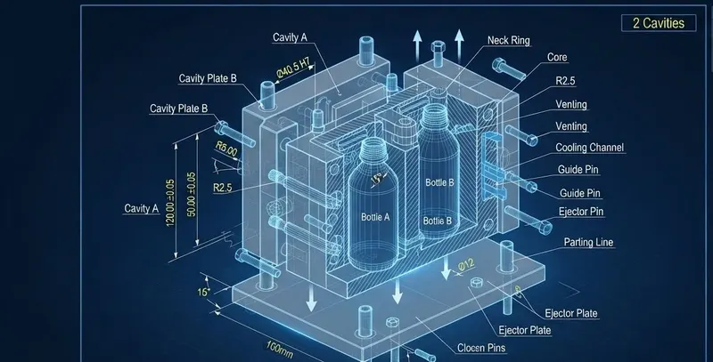
Dokumentasi proyek implementasi lini pabrik, konsultasi rancang bangun, dan perakitan mesin di berbagai wilayah mitra.
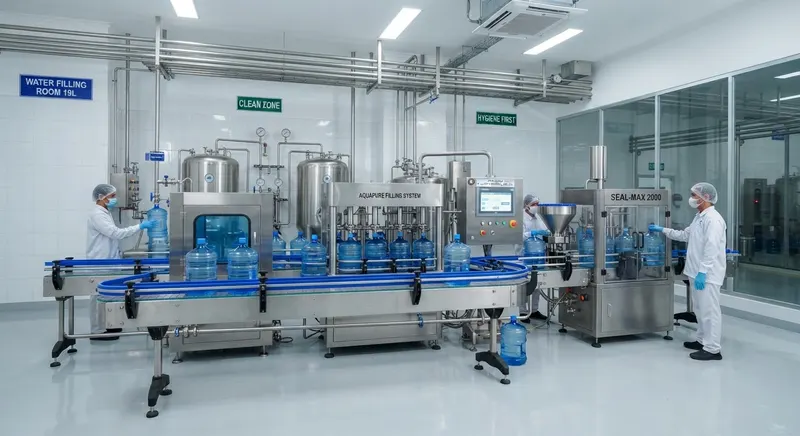
Instalasi turnkey lengkap dari unit filter RO 4.000 GPD hingga jalur pencucian dan pengisian galon 19 L kapasitas 300 BPH.
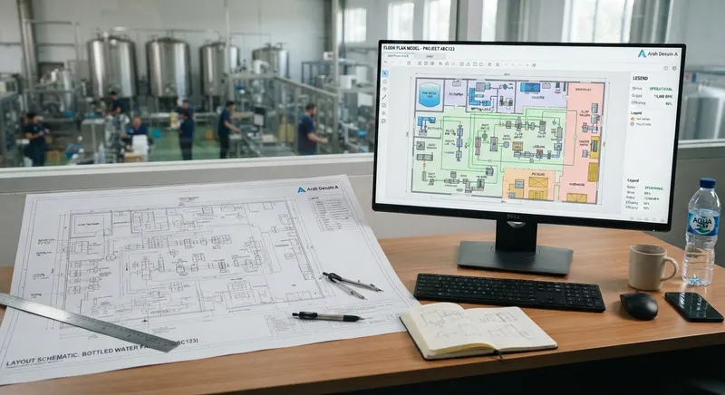
Penyusunan arsitektur ruang bersih kelas sanitasi, zoning air limbah, dan penataan alur jalur blow moulding menuju cleanroom.
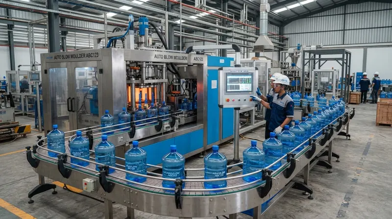
Pengiriman unit mesin tiup galon tipe TWI-G19 serta kompresor udara bertekanan tinggi 3,0 MPa dan chiller penstabil suhu mold.
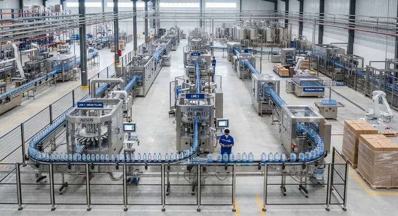
Integrasi dua lini sekaligus: rotary cup sealer 220 ml (8 line) dan sistem pengisian botol PET 600 ml kecepatan 3.000 BPH.
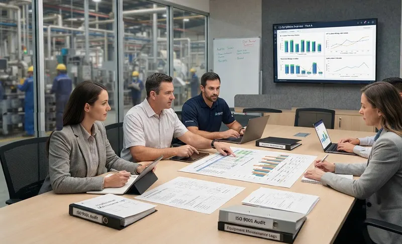
Audit kesiapan fasilitas laboratorium uji, sterilisasi ruang produksi, dan panduan pemenuhan parameter teknis pabrik air.
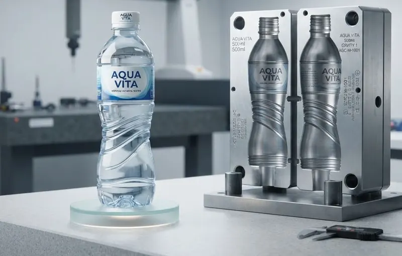
Penyediaan mesin tiup 4-cavity dengan set mold custom botol heksagonal anti-slip 500 ml berkecepatan 3.600 botol per jam.
Sistem manajemen yang relevan untuk rekayasa industri dan operasional pabrik air minum.
Pengelolaan proses, konsistensi mutu, serta perbaikan berkelanjutan dalam penyediaan produk dan layanan.
Sistem manajemen organisasiIdentifikasi dan pengendalian bahaya keamanan pangan di sepanjang rantai produksi, termasuk industri air minum.
Sistem manajemen keamanan panganPengelolaan risiko keselamatan dan kesehatan kerja untuk mendukung lingkungan kerja yang lebih aman.
Sistem manajemen K3Konten contoh untuk pratinjau desain. Daftar ini bukan pernyataan kepemilikan sertifikasi perusahaan; dokumen asli belum ditampilkan.
Konsultasikan target kapasitas, kondisi lahan, atau kebutuhan mesin air minum Anda bersama tim perancang pabrik kami.
Tirta Wiyata Investama, Jl. Contoh Industri No. 123, Kota Contoh
Senin–Jumat, 08.00–17.00 WIB
Kirimkan detail rancangan atau pertanyaan spesifikasi mesin langsung ke WhatsApp resmi kami.
Hubungi Kami+62 812-3456-7890